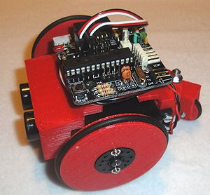
Contenido
[ocultar]Robot Miniskybot: Página principal
|
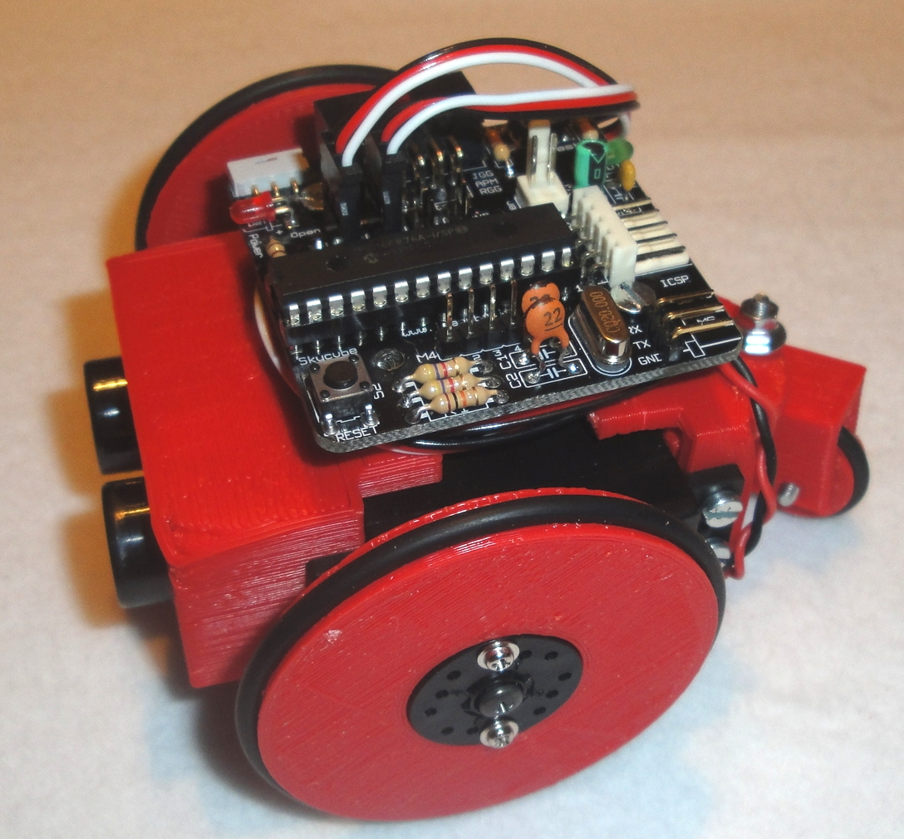 |
Robot Miniskybot, Página principal |
Introducción
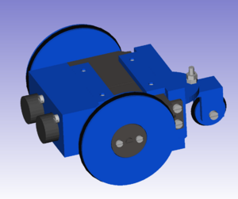
El Miniskybot-v1.0 es un robot móvil imprimible totalmente funcional. Incorpora dos motores, dos sensores de ultrasonidos y un microcontrolador. Es un robot perfecto para iniciase en el mundo de la robótica.
Descarga
| Miniskybot-v1.0-Chassis.zip | Proyecto completo. Fuentes de las piezas (openscad), ficheros STL, software y diseño en Freecad |
| Miniskybot-1.0-Chassis-STL.zip.zip | Piezas en STL para ser impresas |
Videos
|
Enlace directo al vídeo en Youtube
|


Fotos
| Álbum de fotos completo |
|---|
| Álbum de fotos en G+ |
|---|
 (click para ampliar) |
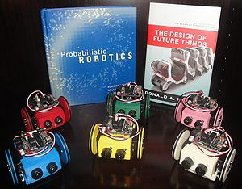 (click para ampliar) |

Montaje
Material necesario

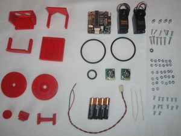
| Las 8 piezas imprimibles del robot |
| 2 juntas tóricas de 50mm de diámetro interior y 3mm de grossor |
| 1 junta tórica de 16mm de diámetro interior y 3mm de grossor |
| 2 Servos Futaba 3003 o compatibles (trucados) |
| 2 Sensores de ultrasonidos (SRF02) |
| 4 pilas AAA |
| 1 Tarjeta Skycube |
| Cable con conector molex de 2 vías |
| 4 separadores macho-hembra de 10mm y M3 |
| 2 tornillo M3 y 8mm |
| 6 tornillos M3 y 12mm |
| 1 arandela M3 |
| 32 tuercas M3 |
| 14 tornillos M3 y 6mm |
Plano de montaje
| 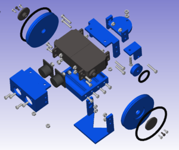 (click para ampliar) |

Instrucciones de montaje
- Paso 1: Insertar 30 tuercas en sus correspondientes huecos en las piezas imprimibles. Para ello seguir las instrucciones de las Montaje de las piezas con tuercas empotradas
- Paso 2: Montar las ruedas. Seguir estas instrucciones
| 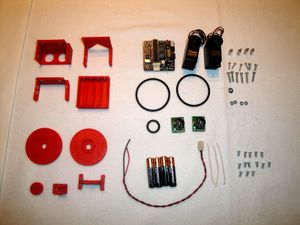 Paso 1: Empotrar las tuercas en sus respectivos huecos en todas las piezas imprimibles (click para ampliar) |
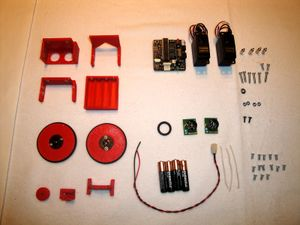 Paso 2: Montar las ruedas (click para ampliar) |


- Pase 3: Montar el portapilas. Seguir estas instrucciones
- Paso 4: Insertar los sensores de ultrasonidos en la pieza frontal
| 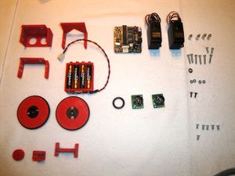 Paso 3: Montar el portapilas (click para ampliar) |
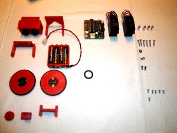 Paso 4: Colocar los sensores en la pieza frontal (click para ampliar) |


- Paso 5: Unir los dos servos como se indica en la figura y atornillar la parte frontal del robot (la que tiene los dos sensores)
- Paso 6: Colocar la pieza trasera. Usar 4 tornillos largos (M3x12) para atornillar la pieza a los servos
| 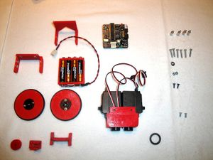 Paso 5: Colocar la pieza frontal (click para ampliar) |
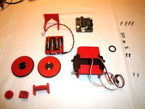 Paso 6: Colocar la pieza trasera (click para ampliar) |


- Paso 7: Atornillar la pieza soporte del portapilas la pieza trasera
- Paso 8: Poner junta tórica en la rueda loca
| 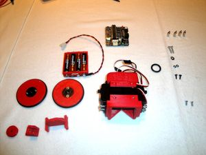 Paso 7: Atornillar el soporte del portapilas (click para ampliar) |
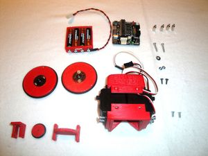 Paso 8: Colocar la junta tórica en la rueda loca (click para ampliar) |


- Paso 9: Montar la rueda loca sobre la pieza que contiene su eje de giro. Usar dos tornillos M3x12mm
- Paso 10: Atornillar soporte fijo de la rueda loca en la parte trasera
| 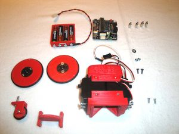 Paso 9: Montar rueda loca (parte I) (click para ampliar) |
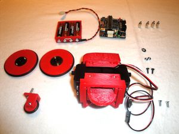 Paso 10: Atornillar el soporte fijo de la rueda loca (click para ampliar) |


Paso 11: Colocar las ruedas en los servos. No atornillarlas todavía
Paso 12: Colocar la rueda loca sobre el soporte fijo trasero. Usar una arandela y dos tuercas. No apretar las tuercas mucho para que la rueda loca pueda girar fácilmente
| 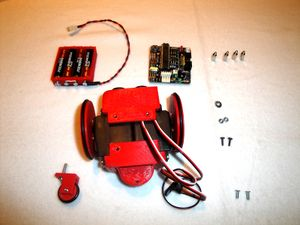 Paso 11: Colocar las ruedas (click para ampliar) |
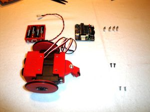 Paso 12: Atornillar la rueda loca al robot (click para ampliar) |


Paso 13: Poner los separadores macho-hembra en la parte superior del robot. Sacar los cables de los servos como se muestra en la figura
Paso 14: Atornillar la tarjeta Skycube a los separadores, con la orientación mostrada en la figura
Paso 15: Finalizar el robot: atornillar las ruedas al robot, colocar el portapilas y realizar las conexión. ¡¡El robot está listo!!
| 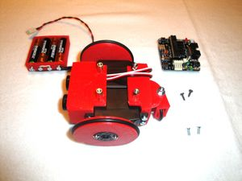 Paso 13: Colocar los separadores (click para ampliar) |
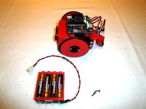 Paso 14: Atornillar la electrónica (click para ampliar) |


Repositorio
- Repositorio SVN: http://svn.iearobotics.com/Mini_Skybot/v1.0/
Enlaces
Autores
Créditos
- Olalla Bravo: Es la autora de la rueda loca para el Miniskybot V1.0
Licencia
| |
Noticias
- 23/Abril/2011: Primera versión de esta página
- 13/Feb/2011: Comenzada esta página